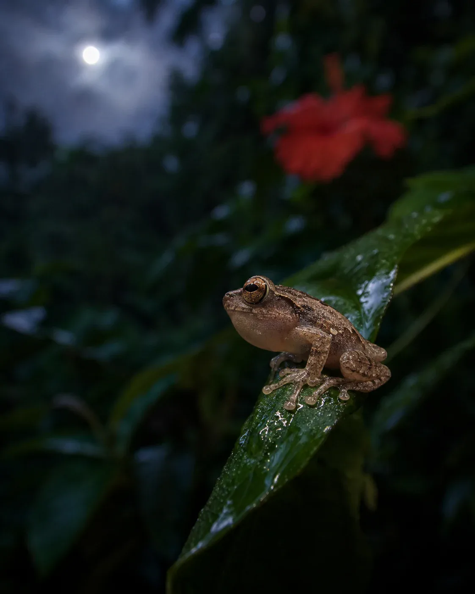

De El Yunque
The frog that names us.
El Yunque is the rainforest that sits over the island — warm, wet, awake after dark. The coquí is the small tree frog who lives in it. At dusk he starts: two notes, co… quí, over and over, until the whole hillside is answering.
That call is our name, our sound and our first ingredient. The rest is coconut — water and milk, a little cane and agave, cinnamon, vanilla. Cold, non-alcoholic, Puerto Rican. Everything we make starts on that hillside, after dark.
El Yunque, down to the coast. The coquí sings two notes, all night, from this hillside.